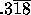
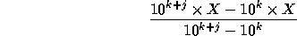

| Rational Numbers from Repeating Fractions |
A rational number is any which can be written in the form p/q, where p and q are integers. All rational numbers less than 1 (that is, those for which p is less than q) can be expanded into a decimal fraction, but this expansion may require repetition of some number of trailing digits. For example, the rational number 7/22 has the decimal expansion .3181818... Note that the pair of digits 1 and 8 repeat ad infinitum. Numbers with such repeating decimal expansions are usually written with a horizontal bar over the repeated digits, like this: 
If we are given the decimal expansion of a rational fraction (with an indication of which digits are repeated, if necessary), we can determine the rational fraction (that is, the integer values of p and q in p/q) using the following algorithm.
Assume there are k digits immediately after the decimal point that are not repeated, followed by a group of j digits which must be repeated. Thus for 7/22 we would have k = 1 (for the digit 3) and j = 2 (for the digits 1 and 8). Now if we let X be the original number (7/22), we can compute the numerator and denominator of the expression

For we obtain the following calculation for the numerator of this fraction:
The denominator is just 1000 - 10, or 990. It is important to note that the expression in the numerator and the denominator of this expression will always yield integer values, and these represent the numerator and denominator of the rational number. Thus the repeated fraction is the decimal expansion of the rational number 315/990. Properly reduced, this fraction is (as expected) just 7/22.
The input data for this problem will be a sequence of test cases, each test case appearing on a line by itself, followed by a -1. Each test case will begin with an integer giving the value of j, one or more spaces, then the decimal expansion of a fraction given in the form 0.ddddd (where d represents a decimal digit). There may be as many as nine (9) digits in the decimal expansion (that is, the value of k+j may be as large as 9).
For each test case, display the case number (they are numbered sequentially starting with 1) and the resulting rational number in the form p/q, properly reduced.
2 0.318 1 0.3 2 0.09 6 0.714285 -1
Case 1: 7/22 Case 2: 1/3 Case 3: 1/11 Case 4: 5/7